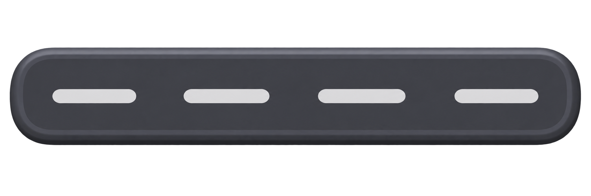
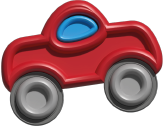
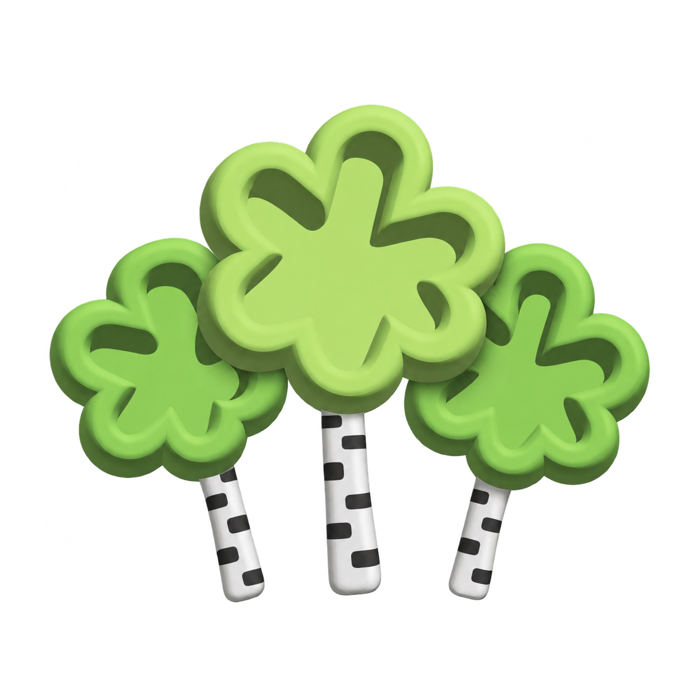

ЭкоБиоМониторинг малых городов
Платформа гражданского экологического мониторинга для стандартизированного сбора, верификации и анализа биоиндикационных данных о состоянии городской среды.
Экологический мониторинг малых городов
В малых городах детальные экологические наблюдения по отдельным участкам территории часто ведутся нерегулярно. В проекте биологический отклик берёзы повислой оценивается по листьев, а транспортную нагрузку характеризуют с помощью . позволяет проверить статистическую связь между этими показателями и оценить пригодность биоиндикационного подхода для дальнейшего автоматизированного анализа фотографий.



Интерактивная карта мониторинга
На карту попадают только подтверждённые наблюдения. Для каждой точки система связывает место, дату, значение и результаты проверки. данные и расчётная транспортная нагрузка сохраняются как отдельные показатели, чтобы их можно было сопоставлять без подмены прямых измерений расчётными значениями.
Участие в мониторинге
Ваше наблюдение может стать частью мониторинга!
Участники собирают стандартизированные наблюдения по единой методике. Система проверяет полноту данных, выполняет предварительный анализ фотографий и передаёт материалы на модерацию. Только подтверждённые наблюдения включаются в общую базу и используются для анализа городской среды.
Единая методика сбора данных
Перед подачей наблюдения участник проходит обучение. Единая задаёт требования к определению берёзы повислой, отбору 30 листьев с одного дерева и стандартизированной фотосъёмке. Одинаковые условия сбора уменьшают влияние случайных факторов и повышают сопоставимость данных разных участников.
Обратная связь
Сообщите об ошибке в данных или работе сайта, задайте вопрос по методике либо предложите улучшение проекта.